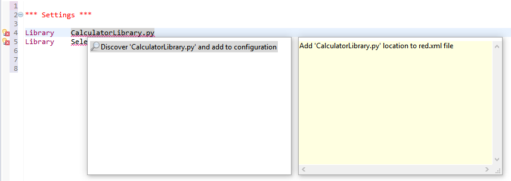
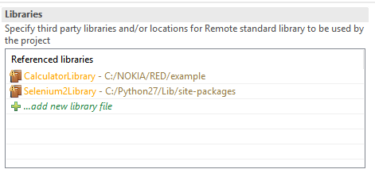
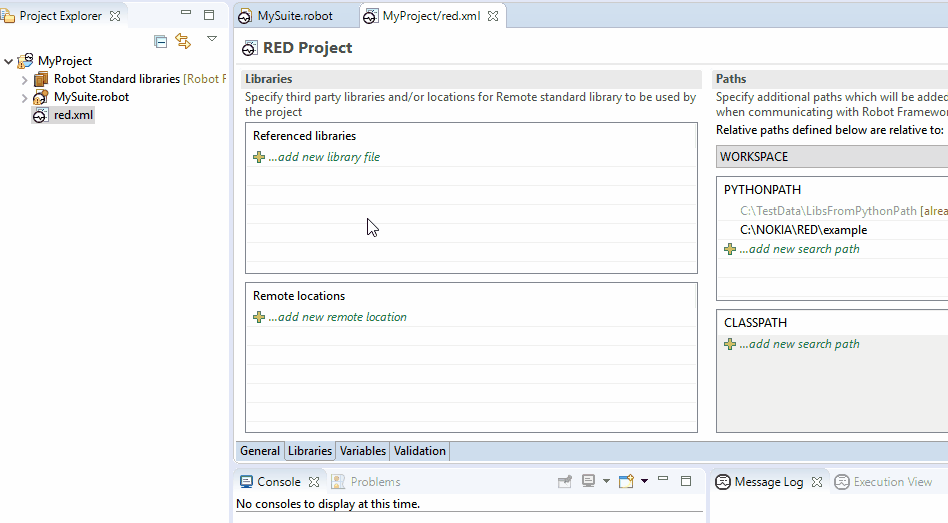
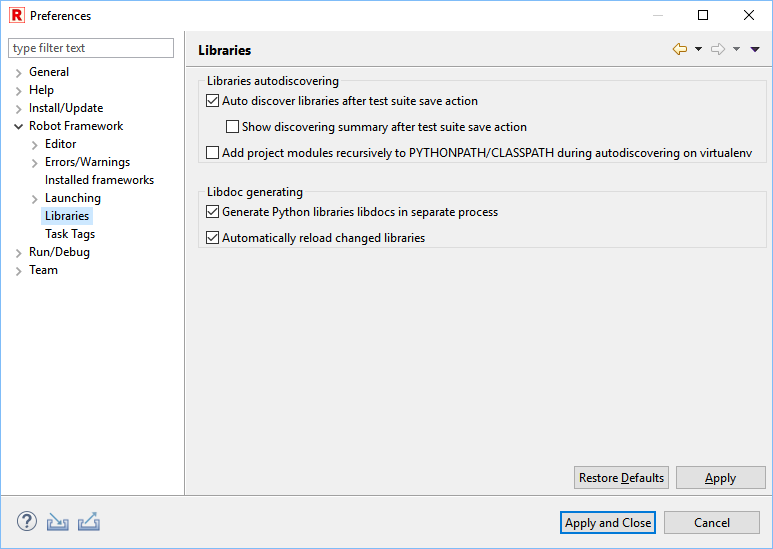

Recognizing external libraries in RED
- Warning
- As of now RED is only able to recognize libraries for which library specification file can be generated
by
robot.libdoc without arguments provided. This means that the library constructor
cannot have required arguments (only default/varargs/kwargs).
In order to provide validation and keyword assistance of external libraries (any library not bundled with
RobotFramework, but installed by pip or included in testcase by file path), external library needs to be
included in red.xml file in the Referenced libraries part.
There are few ways to include library into red.xml.
Library autodiscovery
Main mechanism to include libraries' keywords in RED is done by autodiscovery mechanism. Mechanism works on two
levels - during test edition and executed in Project Explorer on group of files and folders.
Every time when user edits test suite which has error markers on library declaration, autodiscovery is executed
together with save action.
When there is a need to run autodiscovery on list of files, folders or whole project, this can be achieved by using
right click menu in Project Explorer from Robot Framework option.

- Note
- Library autodiscovering is not run on excluded project parts (see more under topic
Limiting validation scope).
Quick Fix - shortcut CTRL+1
Lets focus on following example:

In sample testcase, there are two libraries included. CalculatorLibrary.py is custom user local library placed in the
same folder as testcase, Selenium2Library was installed by pip.
Both libraries are not recognized by RED as libraries names are underlined and error markers are placed next to line
numbers.
Note the light bulb in error marker - it indicates that there is Quick Fix action available.
Click on the library name in test editor, open right click menu and choose Quick Fix or use CTRL+1.

After selecting Discover option, RED will search either PythonPath or library file path, if successful library will
be added to Referenced libraries in red.xml

Add library from Project Explorer
External Python libraries can be directly included to red.xml file by right clicking on file and using option:
Robot Framework -> Add Library to red.xml.
Add library from red.xml editor
External can be also added directly from red.xml editor:

Using libdoc file when external library is not present locally
In some scenarios, testware edit happens on different host than test runtime thus it is undesirable/unnecessary to
install/import all libraries as on remote host. RobotFramework provides possibility to generate an xml file with list
of keywords, this also provides agile test development where libraries are developed in parallel to test cases.
Libdoc xml file can be included instead of external library file by using red.xml editor.
For more information about LibDoc please refer to http://robot-framework.readthedocs.io/en/latest/_modules/robot/libdoc.html?highlight=libdoc
Library autodiscovering and libdoc generation preferences
Autodiscovering and libdoc generation preferences can be configured at
Window -> Preferences -> Robot Framework -> Libraries

- Warning
- If the libraries you are going to debug use
Gevent library then please select Support Gevent
during autodiscovery checkbox. This will make it possible for autodiscovery mechanism to support such libraries.
Without this you may experience hanging both when looking for libraries as well as when keyword source
is being searched.
- Note
- In some cases problems occur during libdoc generation via session server. It leads to a situation when the
server hangs due to
Global Interpreter Lock
between the server code and the library code.
To avoid this problem since version 0.8.11 libdocs are generated in a separate process by default. Note that this solution
may affect the time of libdoc generation, i.e. slowing down the libraries import, especially with jython interpreter.
If you are not using problematic libraries you can disable the preference to make libdoc generation faster.
Reloading libraries after change
Whenever external library is changed (for instance new keyword is added), libdoc needs to be regenerated to provide
changes on content assist and validation in RED.
Since version 0.6.3, RED can automatically detect library change and regenerate libdoc (it can be switch off/on in
preferences).
This can be also done manually by right clicking on library in Project Explorer and selecting Reload action
Manual library reloading can be also useful for finding libdoc generation errors.
Whenever RED encounters libdoc generation problem, it will be shown as popup window from Python execution:

This indicates that some of the dependencies are missing on your local machine which may affect test suites execution.
To verify you can try to execute libdoc in console:
python -m robot.libdoc <PATH_TO_LIBNAME> list